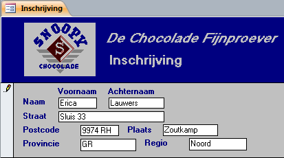

3 Gegevens toevoegen/wijzigen
- Het gebruik van een formulier voor gegevensinvoer.
- Het bewerken, toevoegen en verwijderen van records in een tabel.
- Het gebruik van een hoofdformulier met subformulier.
- Mogelijkheden om validatie van de invoer van gegevens af te dwingen.
Het toevoegen van nieuwe gegevens of het wijzigen van bestaande gegevens is een van de belangrijkste werkzaamheden binnen Access. In dit onderdeel komen een aantal basisvaardigheden voor het toevoegen en/of wijzigen van gegevens aan de orde.
3.1 Over gegevens invoeren
Weliswaar kunnen records direct in de tabel bewerkt worden, maar deze methode is niet aan te raden voor gebruikers die niet met Access vertrouwd zijn. De kans op foute invoer is groot, zeker bij tabellen die gerelateerd zijn aan andere tabellen. De gegevensinvoer kan veel beter via een formulier lopen. Een formulier kun je gebruikersvriendelijk maken, van toelichtende tekst voorzien en op de achtergrond ook nog eens allerlei controles op de invoergegevens laten uitvoeren.
3.2 Tabel bewerkingen
Je kunt rechtstreeks in een tabel de belangrijkste gegevensbewerkingen uitvoeren, zoals records bewerken, toevoegen en verwijderen. De gegevens worden in de velden ingetypt. Ook de bekende manieren om te kopiëren en te plakken worden ondersteund.
Record bewerken
Open de tabel en gebruik dan de muis of de pijltjestoeten om naar het veld te gaan dat gewijzigd moet worden. Klik in de cel en breng de wijzigingen aan. Zodra je een wijziging aanbrengt verschijnt aan de linkerkant van het record een icoon met een potlood: . Dit is het teken dat het record in de bewerkingsmodus (edit mode) zit. Zodra je het record verlaat verdwijnt het symbool en zijn de wijzigingen opgeslagen.
Record toevoegen
Ga naar de onderkant van de tabel, naar de rij met een asterisk *. Deze rij bestaat in werkelijkheid niet, maar wordt aangemaakt wanneer je begint met gegevens in te typen. De asterisk gaat dan een rij naar beneden. Het nieuwe record wordt automatisch opgeslagen.
Record verwijderen
Er zijn meerdere manieren om records te verwijderen. De twee gemakkelijkste manieren zijn:
- Selecteer het record en druk dan op de toets Delete.
- Rechtermuisklik in de marge aan het begin van het record. Kies daarna uit het snelmenu voor Record verwijderen. Access vraagt daarna om een bevestiging van de verwijderactie.
Access kent geen knop of functie om de verwijderacties ongedaan te maken.
3.3 Taak: Nieuwe klant toevoegen
Met het formulier Inschrijving kunnen alleen nieuwe records worden toegevoegd aan de tabel Klanten. Bladeren door de bestaande records is uitgeschakeld.
Open zonodig database snoep365.accdb.
Open formulier Inschrijving.
Het formulier Inschrijving bevat blanco vakken (velden) waar je de gegevens typt. Het invoegsymbool geeft aan waar de tekst verschijnt die je intypt. Je kunt het invoegsymbool verplaatsen door op een ander veld te klikken of door herhaaldelijk op de TAB te drukken.
- Voer de gegevens in die in de volgende afbeelding te zien zijn.

Figuur 3.1: Gegevensinvoer via formulier inschrijving
Er is weer een potlood te zien wat er op duidt dat het formulier in de bewerkingsmodus is en dat de gegevens nog niet zijn opgeslagen.
Het record wordt automatisch opgeslagen wanneer je het formulier sluit of naar een ander record gaat.
Sluit het formulier via de sluitknop X rechtsboven in het documentvenster. De records die je via het formulier Inschrijving toevoegt worden opgeslagen in de tabel Klanten. In de volgende stap ga je dit controleren.
Open tabel Klanten, ga naar het laatste record en controleer of dit het eerder toegevoegde record is.
Sluit tabel Klanten.
3.4 Taak: Nieuwe bonbon toevoegen
Via het formulier Bonbons kun je zowel door bestaande records bladeren als nieuwe records toevoegen.
Open zonodig database snoep365.accdb.
Open formulier Bonbons.
- Klik in de statusregel op de knop Nieuw (leeg) record .
-
Voer de volgende bonbongegevens in:
- Bonbonnaam: Pecan Mokka Toffee
- Bonboncode: F03
- Beschrijving: Zoete crèmige mokka en pekan, omgeven met toffee
- Chocoladetype: Toffee
- Vullingtype: Mokkacrème
- Noottype: Pecan
- Kosten: 0,25
Sluit formulier Bonbons via de sluitknop X rechtsboven in het documentvenster. De records die je via het formulier Bonbons toevoegt worden opgeslagen in de tabel Bonbons. In de volgende stap ga je dit controleren.
Open tabel Bonbons en controleer of het record is toegevoegd.
Sluit tabel Bonbons.
3.5 Taak: Nieuwe doos toevoegen
Het formulier Dozen bevat een subformulier. In het hoofdformulier met de naam Dozen staat de volgende informatie: doosnaam, dooscode, doosbeschrijving, gewicht, doosprijs en de magazijnvoorraad. Deze gegevens worden opgeslagen in de tabel Dozen. Bovendien staat op dit formulier een extra veld Dooskosten. Deze kosten zijn berekend via de som van (Bonbonkosten * Hoeveelheid) van alle bonbons die in de doos zitten. In het subformulier met de naam Dozen subformulier zijn de bewerkbare velden: Bonboncode en Hoeveelheid. Deze gegevens, inclusief de dooscode, wordt opgeslagen in de tabel Doosdetails. In de volgende stappen wordt een nieuwe doos toegevoegd via het formulier Dozen.
Open zonodig database snoep365.accdb.
Open formulier Dozen.
- Klik in de statusregel op de knop Nieuwe (lege) record.
-
Voer de volgende doosgegevens in:
- Doosnaam: Winterverrassing
- Dooscode : WINT
- Doosbeschrijving: Noten en bessen, bedekt met chocolade en toffee; geknipt voor de lange winteravonden bij het haardvuur.
- Gewicht: 300 gram
Klik onder Inhoud in het veld Code op de keuzepijl en selecteer bonboncode B02 Butterscotch Bosbes. De overige bonbongegevens als bonbonnaam, chocolade, noot, vulling en kosten worden automatisch ingevuld. Alleen het veld Aantal moet nog ingevuld worden.
Voer in bij Aantal 3.
-
Voeg de volgende bonbons aan de doos toe:
Code Bonbonnaam Aantal B05 Butterscotch Framboos 3 P03 Cashew Perfect 3 F01 Walnoot Mokka Toffee 3 F02 Pistache Mokka Toffee 3 P07 Klassieke Kers 3 De Dooskosten van €4,53 wordt automatisch berekend.
Voer in bij Doosprijs 25,00 en bij Magazijnvoorraad 120.
Sluit het formulier Dozen.
Controleer in de tabel Dozen dat de nieuwe doos is toegevoegd.
3.6 Restrictie en validatie van gegevens
Je hebt in Access verschillende mogelijkheden om de manier te besturen waarop gegevens in de database worden ingevoerd. Je kunt bijvoorbeeld de gegevens die in een veld worden ingevoerd beperken door een validatieregel voor dat veld te definiëren. Als de ingevoerde gegevens niet aan de regel voldoen, wordt een foutbericht weergegeven waarin wordt meegedeeld welk soort invoer is toegestaan. Een andere methode om gegevensinvoer te besturen is het gebruik van een invoermasker, dat een format voor invoer biedt met behulp van karakters en symbolen.
Je kunt deze eenvoudige methoden van validatie en restrictie toepassen door eigenschappen voor velden in tabellen of eigenschappen voor besturingselementen in formulieren in te stellen.
Het is meestal het beste om validatie en restrictie van gegevens in de ontwerpweergave van de tabel te definiëren door veldeigenschappen in te stellen. Dit bespaart tijd, omdat telkens als je het veld in een formulier gebruikt, de regels voor veldvalidatie en andere eigenschappen op de gegevensinvoer van het formulier worden toegepast.
Als de gegevens die in een besturingselement van een formulier worden ingevoerd niet afhankelijk zijn van een veld in een tabel dan moet je de eigenschappen voor validatie in het formulier definiëren.
Voorbeeld
Een memo van de afdeling Marketing van Snoopy Bonbons meldt dat de prijs van de doos Butterscotch moet worden gewijzigd in € 7,75.
Open zonodig database snoep365.accdb.
Open het formulier Dozen en navigeer naar de doos Butterscotch.
-
Wijzig de Doosprijs van € 27,75 in € 7,75 en druk op TAB toets. Er verschijnt een validatiebericht met de mededeling dat deze prijs niet juist is en hoe we het probleem kunnen verhelpen.
Doosprijs te laag. Neem contact op met Marketing voor prijsinformatie, en geef een prijs op die minimaal gelijk is aan de dooskosten maal 2.Omdat aan het veld doosprijs een validatieregel is gekoppeld, wordt de prijs van 7,75 verworpen.
Klik op OK.
Verander de doosprijs terug in € 27,75 en druk op TAB toets. Sluit daarna het formulier.
3.7 Opgaven
data001 - Bonbons toevoegen
Voeg de volgende twee bonbons toe:
| Veld | Bonbon 1 | Bonbon 2 |
|---|---|---|
| Bonbonnaam | Cashew Mokka Toffee | Amandel Mokka Toffee |
| Bonboncode | F04 | F05 |
| Beschrijving | Zoete, crèmige mokka en cashew omgeven met toffee. | Zoete, crèmige mokka en amandel omgeven met toffee. |
| Chocoladetype | Toffee | Toffee |
| Vullingtype | Mokkacrème | Mokkacrème |
| Noottype | Cashew | Amandel |
| Kosten | € 0,24 | € 0,19 |
data002 - Order toevoegen
Een klant plaatst een nieuwe order volgens de gegevens hierna. Bedenk zelf hoe je het beste deze order in kunt voeren. Voer daarna deze order in. De ordercode moet de eerstvolgende beschikbare ordercode zijn.
Bestelling op 23 april 2010, 10 uur. Klant Rebecca Smit bestelt telefonisch drie dozen Kers en twee dozen Mars.Een aantal uren later komt er telefonisch onderstaande wijziging op deze order. Bedenk zelf hoe je het beste deze wijziging kunt doorvoeren. Breng daarna de wijziging aan.
Orderwijziging 23 april 2010, 16 uur. De twee dozen Mars moeten geschrapt worden.